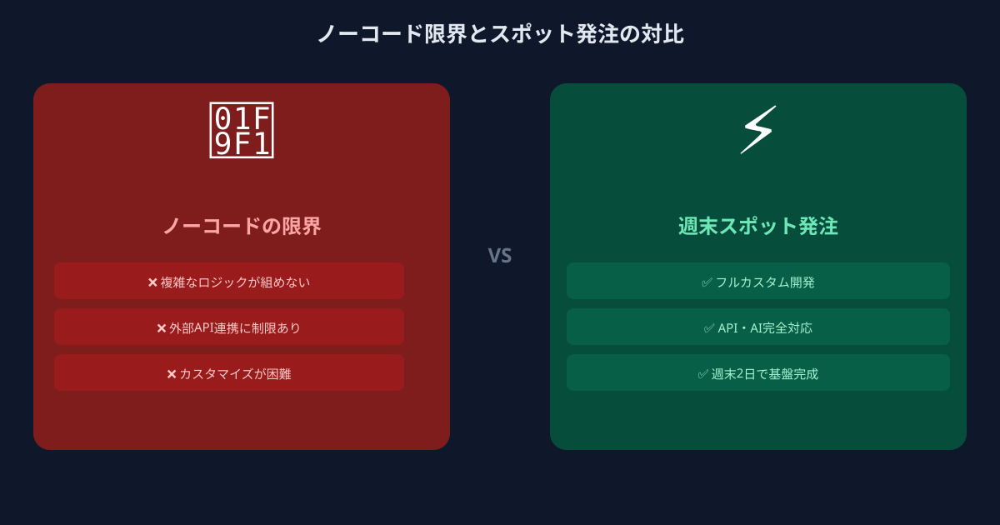
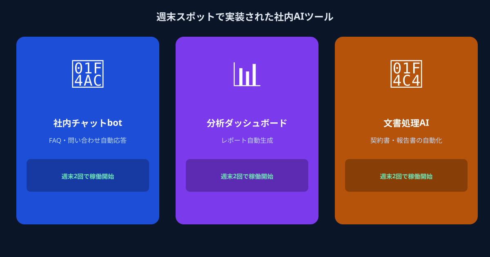

ノーコードツールが「使えない」のではなく、「そこまでしかできない」のが問題
ZapierやMake（旧Integromat）、NotionAI、Microsoft Copilotなどのノーコード・ローコードツールは、定型的な業務自動化には確かに有効です。しかし、自社固有のデータベースと連携させたい、社内専用のナレッジベースをRAGで検索可能にしたい、ChatGPT APIを使った業務フローをカスタム設計したい——そうした要件に差し掛かった瞬間に、ノーコードツールの壁は突然現れます。
問題はツールの善し悪しではありません。ノーコードは「汎用的な処理を素早く組み合わせる」ために設計されており、「自社仕様の生成AI機能をゼロから作り込む」用途には最初から対応していないのです。この事実に気づかないまま試行錯誤を続けることで、時間とサブスクリプション費用だけが積み上がっていきます。
では、自社にエンジニアがいない、あるいはいても手が回らないとき、どうすればいいのか。正社員採用は最低でも数ヶ月かかり、大手ITベンダーへの外注は初期費用だけで数百万円になることも珍しくありません。必要なのは「もっと小さい単位で、必要な機能だけを作れる人」です。それが週末スポット依頼という選択肢です。
週末スポット依頼が社内AIツール実装に向いている3つの理由

週末スポット発注とは、副業・フリーランスのエンジニアに対して、特定のタスクを短期・週末限定の稼働で依頼する発注形態です。なぜこれが生成AI社内ツールの実装に向いているのかを、3つの観点から整理します。
理由① AIプロトタイプは小さく作るほど失敗が少ない
社内AIツールの開発で最も多い失敗パターンは、「最初から完璧なものを大きな予算で作ろうとして、使われないまま終わる」というケースです。生成AIを活用したシステムは、実際に社員が使ってみてフィードバックを得るまで、本当に有用かどうかを判断できません。仕様書の段階でいくら精緻に設計しても、現場での使い勝手は動かしてみないとわかりません。
週末スポット依頼であれば、「まず最小限の動くもの（MVP）を1〜2週間で作る」というアプローチが自然に取れます。スコープを絞り、動作確認できる状態まで持っていき、そこから次のタスクとして改良を依頼するという進め方は、AI開発のリスクを最小化する上で理にかなっています。大きな契約を結ぶ前に小さく試せることが、週末スポット発注最大の利点です。
理由② 週末・タスク単位なら費用対効果が測りやすい
大手ベンダーへの外注では、要件定義・設計・実装・テストがパッケージ化され、途中のコストが見えにくくなりがちです。一方、タスク単位の発注では「このAPIとの連携実装に○万円」「このプロンプトエンジニアリングと検証に○万円」と、何にいくら使ったかが明確に管理できます。
これは経営層や上司への報告のしやすさにも直結します。「生成AI社内ツールの試作に合計○万円かかったが、○件の業務が自動化された」という実績を持って次の予算申請ができるため、AIツール導入のROIを段階的に検証しながら予算規模を拡大していくことが可能です。スモールスタートで成果を見せてから投資を増やすという意思決定のしやすさが、経営者・担当者の双方にとって大きなメリットです。
理由③ AI実装に強いエンジニアが副業市場に集まっている
ChatGPT APIやClaude API、LangChain、RAG（検索拡張生成）、LLMを使ったエージェント開発——これらの最新AI実装スキルを持つエンジニアは、メガベンチャーや大手テック企業に在籍していることが多く、通常の採用市場では接触すら難しい層です。しかし副業市場では、本業のスキルを活かしてスポット案件を受けたいと考えているエンジニアが確実に存在します。
ANKENに登録しているエンジニアの多くは、大手企業在籍のフルスタックエンジニアやAI・機械学習の実務経験者です。彼らは長期雇用契約ではなく「タスクが明確なスポット案件」を望んでいるため、週末や平日夜に集中して動けます。採用市場では出会えない人材と、発注者の側から繋がれる構造がスポットマッチングの強みです。
実際にどんな社内AIツールがスポット依頼で作られているか

ANKENを通じたスポット依頼で実際に実装・完成した社内AIツールのユースケースを3つ紹介します。
従業員数80名のIT企業で、バックオフィス担当者への問い合わせが増加しており「就業規則のどこに書いてあるか」「経費精算の手順は？」といった質問を自動応答できるツールを求めていた。ANKENで週末スポット案件として依頼し、PythonとLangChain、Pineconeを組み合わせたRAGシステムを2週間・土日稼働で実装。費用は計18万円。導入後、バックオフィスへの問い合わせが月40件から15件に減少した。
12名の営業チームを持つBtoB SaaS企業が、商談後に担当者が入力するメモを自動的に要約・構造化してSalesforceに登録する仕組みを必要としていた。スポット依頼として発注し、Claude APIとMake（旧Integromat）を組み合わせたワークフローを1週間で構築。費用は8万円。営業担当者の入力工数が1件あたり平均15分削減され、月間約30時間の工数節約が実現した。
年間100名以上の採用選考を行う成長期スタートアップで、書類選考にかかる人事担当者の工数が課題だった。ANKENで「GPT-4o APIを使ったレジュメ評価スコアリングと要点抽出ツール」を依頼。スプレッドシートと連携したシンプルなツールを週末2回の稼働で実装、費用は12万円。書類選考の時間を従来比60%削減しながら、評価の一貫性も向上したと担当者が語る。
週末スポット依頼をうまく進めるための発注ポイント
スポット発注を成功させる鍵は、「何を作るか」ではなく「何が完成した状態か」を明確にすることです。以下の3点を意識するだけで、依頼のスムーズさは大きく変わります。
まず、完成の定義を具体的に決めることです。「AIで業務効率化したい」という依頼は曖昧です。「PDFファイルをアップロードすると、指定した質問に回答するWebアプリが動くこと」のように、完成形の動作を一文で書けるレベルまで絞り込みましょう。次に、既存のシステムや使用ツールの情報を最初に共有することです。連携させたいSaaSやデータの形式が事前にわかっていると、エンジニアが技術選定を的確に行えます。最後に、最初の依頼は「動作確認できる最小限のもの」にすることです。完璧なUIや細かいエラーハンドリングは後から追加できます。まず動くプロトタイプを手に入れ、現場に試してもらった上で追加依頼を行うステップが、最もコストを抑えながら確実に前進できる方法です。
ANKENでは発注前の無料相談が可能です。「何を依頼すればいいかまだ整理できていない」という段階でも、どの機能をスポット案件として切り出すかを一緒に整理するところから始められます。
よくある質問
- Q. ノーコードツールでは何ができないのですか？
- A. 複雑な業務ロジックや外部システムとの高度な連携など、ノーコードの範囲を超える処理が実現できません。
- Q. 週末スポット依頼はどんな場面に向いていますか？
- A. ノーコードの限界を超えた独自機能の実装や、既存ツールとのAPI連携が必要な場面に向いています。
- Q. 内製化を諦めずに進める方法はありますか？
- A. スポット依頼で実装を進めながら、社内担当者が運用ノウハウを蓄積していく方法があります。
まとめ
ノーコードツールで試してみたが壁にぶつかった、エンジニア採用は予算的に難しい、大手への外注は重すぎる——そう感じている企業担当者にとって、週末スポット依頼は今すぐ試せる現実的な第三の選択肢です。
生成AIを活用した社内ツールは、適切なスコープで発注すれば、数週間・数十万円の単位で動かすことができます。最初の1タスクを小さく始めることで、AIツール導入の成功体験を社内に作り、次の投資判断の根拠にできます。まず何から依頼するかわからなくても、相談ベースで整理できます。気軽にお問い合わせください。
初期費用ゼロ・週末スポットからOK。何を作るか整理できていない段階でも相談可能です。
👉 無料で発注相談をするAIエンジニアとのマッチングまで最短3日。まず話すだけでもOKです。